This week's goal was to design, 3D print, and document a working linkage or mechanism that performs a defined motion. I could use purchased hardware such as screws, bolts, and pins, but every other functional part had to be my own design and 3D printed. I designed a hand-cranked ornithopter: turning a wheel makes two wing arms rise and fall together, like a bird's wings flapping.
I looked for linkages and mechanisms that were patented or published in 2021 or later. I picked two that turn a rotation into a useful motion and that connect to my ornithopter. One flaps a wing the way mine does, and the other is a spatial linkage that shows how much a linkage can do with only four links. All of the sources are listed in the Sources section at the end, and the numbers in brackets point to them.
This is US Patent 12,441,468 B2, "Bio-inspired flapping wing/fin robotic platform," by Xiaozhou Fan and Kenneth Breuer of Brown University. It was filed on November 20, 2023, claims a provisional filing from November 18, 2022, and issued on October 14, 2025 [1]. The wing is modeled on a bat, the lesser short-nosed fruit bat [1].
How it works: the patent describes a robotic flapper with three degrees of freedom. The fuselage holds the motors and drive trains. Each wing has an armwing (the part nearest the body) and a handwing (the outer part), and each wing makes three motions [1]:
In the test described in the patent, the wing flaps at 3 Hz with a 100 mm armwing, folds up to about 75 degrees, and twists about 90 degrees. The whole wing assembly weighs 10 g [1]. The patent says folding and twisting work together to reduce negative lift late in the upstroke and to make more thrust over the whole cycle [1]. This matters because a 2022 review of flapping-wing robots points out that birds, bats, and insects maneuver by actively folding or deforming their wings, while traditional flapping-wing robots get lift and thrust from passive wing deformation [3].
Connection to my project: the flap stage is the closest to what I built. A crank that turns continuously drives a linkage that makes the wing swing, just like my wheel drives the wing links.
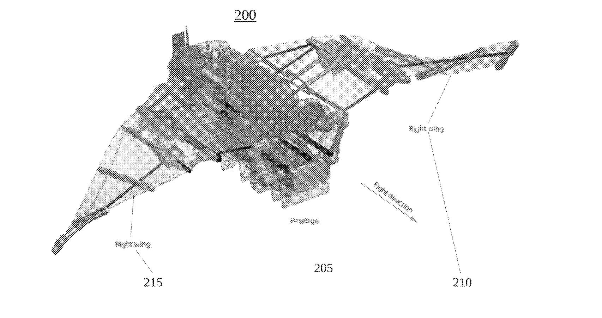
Patent drawing of the robotic flapper: the fuselage (205) is in the center, with a wing (210 and 215) extending to each side. Source: US Patent 12,441,468 B2, X. Fan and K. Breuer, Brown University, issued October 14, 2025 [1].
How it could be used in different industries:
This is a paper by Yuping Gu, Shihao Feng, Yuqin Guo, Fang Wan, Jian S. Dai, Jia Pan, and Chaoyang Song, "Overconstrained coaxial design of robotic legs with omni-directional locomotion," published in Mechanism and Machine Theory, volume 176, article 105018. It was available online on July 18, 2022 [2].
How it works: a Bennett linkage is a single-loop spatial linkage with four links and only revolute joints. The usual mobility count (the Kutzbach-Grubler criterion) says it should not be able to move, but a special relationship between its link lengths and twist angles lets it move with one degree of freedom. That is what "overconstrained" means [2]. In the leg, two servos sit on a common axis, which is the "coaxial" part. One servo drives one link directly through an inner shaft. The other servo drives a second link through a 1:1 timing belt to a hollow shaft around the inner shaft. The paper treats the leg as a four-bar linkage on a rotating base [2].
A leg has two driven inputs, and its foot, a silicone-covered stub on one link, moves over a two-dimensional surface in space shaped like half of a torus. A four-legged robot therefore has 8 driven degrees of freedom [2]. The links are 120 mm long, with twist angles of 135 and 45 degrees. The links are 3D printed in nylon (PA-12), and the maximum leg length is 0.24 m. A finite element check at 20 N gave a peak stress of 4.45 MPa, well below the 48 MPa yield strength [2]. The 1.6 kg prototype walks at about 0.1 m/s and pivot-steers at 30 degrees per second [2].
Connection to my project: my ornithopter is a flat (planar) linkage, and this one shows what changes when the linkage is spatial. It also uses 3D printed links and standard servos, like my project, and the paper lists bird-wing mechanisms among the possible uses of overconstrained linkages [2].
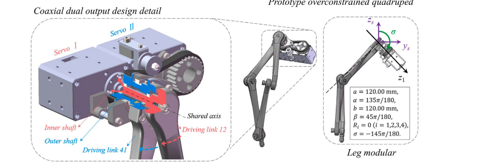
The coaxial Bennett leg: on the left, Servo I and Servo II share one axis and drive two links through an inner shaft and an outer shaft. On the right, the prototype leg with its design parameters: link lengths a = b = 120 mm, twist angles α = 135° and β = 45°, and hip angle σ = −145°. Source: Y. Gu et al., Mechanism and Machine Theory, vol. 176, article 105018 (2022), © 2022 Elsevier Ltd. [2].
How it could be used in different industries:
The mechanism turns a steady rotation of a wheel into a flapping motion of two wings. I chose it because I study aerospace, and while learning about the history of the industry I found ornithopters very interesting. Before fixed-wing aircraft, many early designers tried to copy how birds fly, and I wanted to build a working version of that idea. It does not fly. It is a desk model that I turn by hand, so I can show how the linkage moves. The picture that inspired my wheel-and-rod drive came from Ornithopter.org [10]. That page explains that a flapping mechanism converts the rotary motion of a motor into the back-and-forth motion of flapping wings, and that when a second wing is added to a simple four-bar linkage, the two connecting rods leave the crank at different angles and act at different times. I avoided that problem by driving both wings from one center pin on a single vertical link.
The wheel is the only input. Turning it once makes the wings flap down and back up once.

Final assembly (SolidWorks): the base stands on two legs. The wheel is at the lower center, the vertical link runs up from the wheel to the center of the wing links, and the two wing links form the long horizontal bar across the top.
Animation of the mechanism prototype moving through full turns.
| Component | Qty | Function | Printed or purchased |
|---|---|---|---|
| Base | 1 | Holds the wheel's hub and the two wing pivot bolts (5 mm thick) | Printed |
| Base leg | 2 | Keeps the base standing upright | Printed |
| Wheel | 1 | The hand-turned crank, 38 mm in diameter, with a 6 mm hub through the base (5 mm thick) | Printed |
| Vertical link | 1 | Connects the wheel to the center pin (5 mm thick) | Printed |
| Wing link | 2 | Lever that flaps each wing, with a slot for the center pin (5 mm thick) | Printed |
| 5 mm spacer | 2 | Lifts the second wing link and the vertical link up to their layers | Printed |
| M3 bolt, 20 mm long | 5 | Axle, crank pin, center pin, and the two wing pivots | Purchased |
| M3 nut | 5 | Holds each bolt | Purchased |
| M3 washer | 5 | One at each joint | Purchased |
The parts are stacked in four layers, each 5 mm thick, so the whole assembly is 20 mm thick (the legs are not counted). From back to front:
Splitting the wing links across two layers lets their inner ends cross at the center without hitting each other.
| Joint | What it connects | Hardware |
|---|---|---|
| Axle | Wheel hub turning in the base | M3 bolt through the hub |
| Crank pin | Wheel to vertical link, through a 5 mm spacer | M3 bolt |
| Center pin | Vertical link and the slots of both wing links | M3 bolt |
| Wing pivot 1 | Base to the first wing link | M3 bolt |
| Wing pivot 2 | Base to the second wing link, through a 5 mm spacer | M3 bolt |
The course notes give starting clearances of about 0.2 to 0.3 mm per side for a moving pin in a hole, and they say to confirm them with test prints [5]. Every hole for a screw is 3.4 mm, and I made the wheel hub hole 0.2 mm larger than the hub.
| Moving interface | Designed clearance | How I arrived at it | Result |
|---|---|---|---|
| M3 bolt (3.0 mm) in every bolt hole and slot | 3.4 mm holes, so 0.2 mm per side | 3.4 mm is the "medium" clearance hole for an M3 bolt in ISO 273, between the close size (3.2 mm) and the coarse size (3.6 mm) [4]. It is also the low end of the 0.2 to 0.3 mm per side range in the course notes [5]. Holes print smaller than designed, and elephant foot makes the holes near the bed smaller still, so I did not want to start with less clearance than this [6][7]. | Worked on the first print. |
| Wheel hub in base hole | 6.0 mm hub in a 6.2 mm hole, so 0.1 mm per side | I made the hole 0.2 mm larger than the hub to give it decent clearance. This is the tightest joint, and it is below the 0.2 to 0.3 mm per side range in the course notes [5], so I tested it. | Worked on the first print. I tested it, and the hub turns freely. |
1. How the two wing links meet at the center.
2. Where the wing pivot is.
3. Stacking the parts in layers with spacers.
I modeled each part in SolidWorks and then assembled them. The wing links and the vertical link are flat bars with rounded ends.
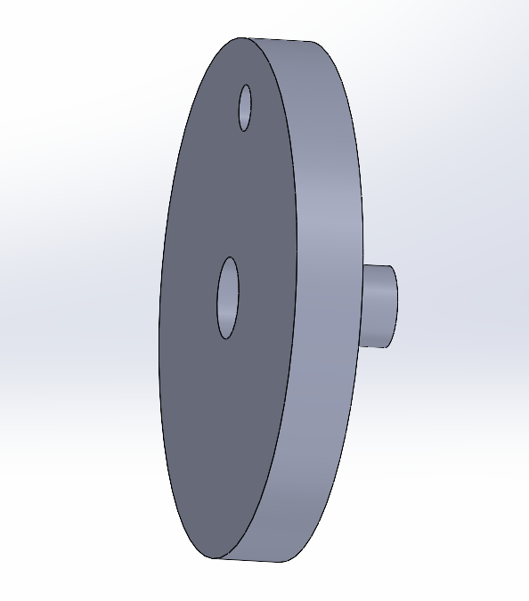
Wheel: a flat disc with a hub that passes through the base. The center hole holds the axle bolt. The off-center hole holds the crank pin bolt.
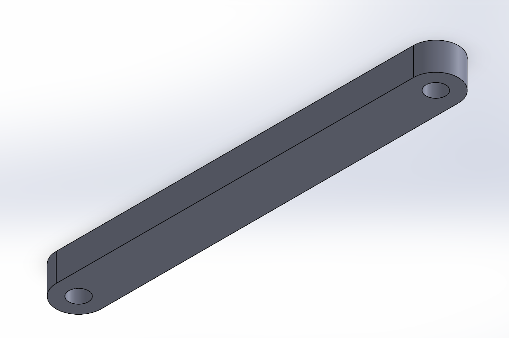
Vertical link: a flat bar with a hole at each end. One end sits on the crank pin and the other on the center pin.
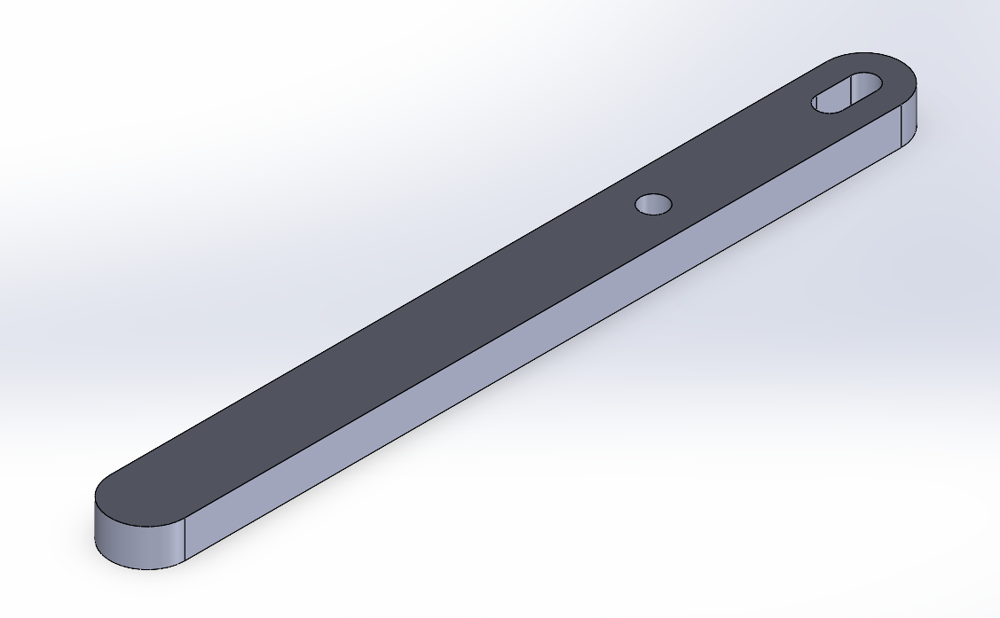
Wing link: a long flat bar. The round hole is the pivot bolt hole, and the short slot at the inner end holds the center pin. I printed two of these.
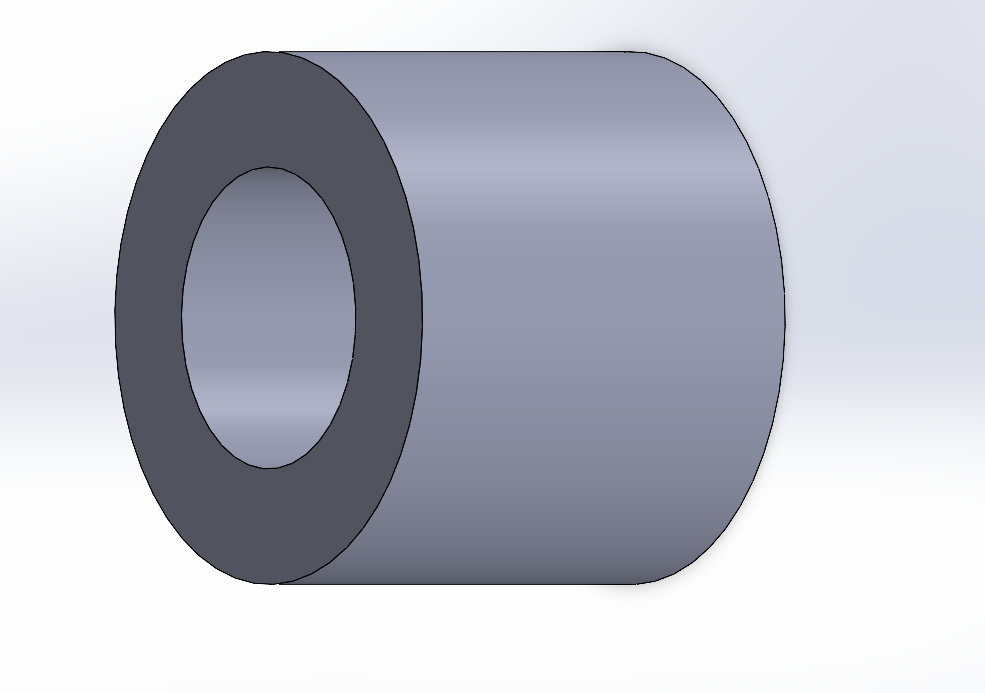
5 mm spacer: a short hollow cylinder, so the M3 bolt passes through it. I printed two.
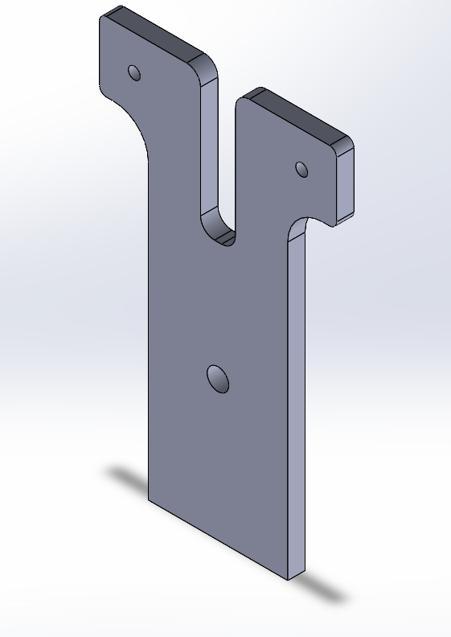
Base: a tall flat plate. The two prongs at the top carry the wing pivot bolts. The larger hole lower down is for the wheel's hub.
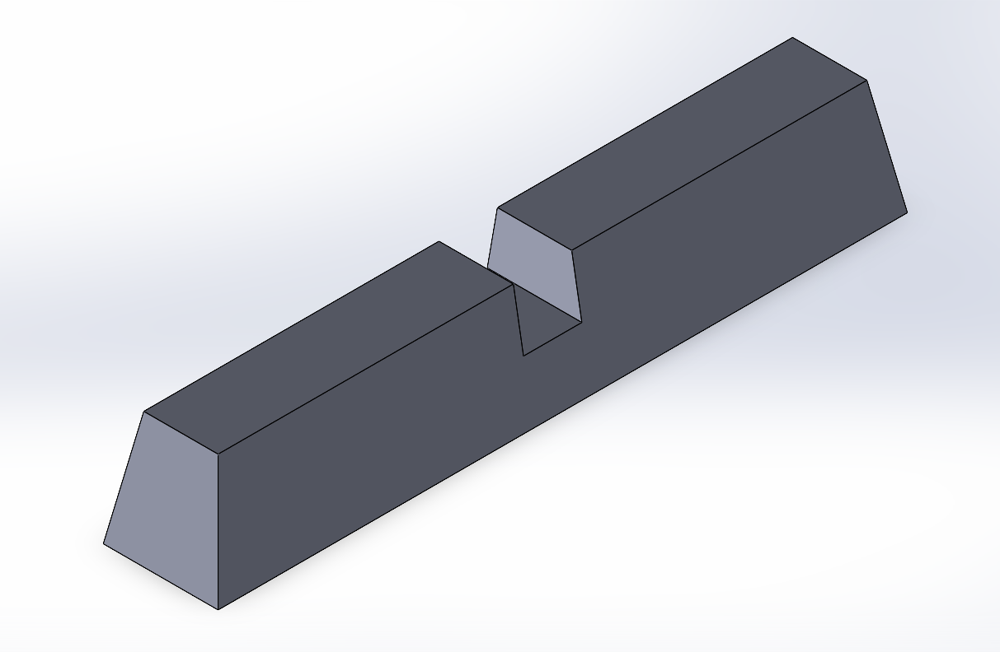
Base leg: a long block with a notch in the middle that the base plate fits into. I printed two so the ornithopter stands on its own. They are not dimensioned, because they are only there for stability.
I printed on a Bambu Lab A1 with a 0.4 mm nozzle and a textured build plate, in Overture Matte PLA (green), using the 0.20mm Standard @BBL A1 process in Bambu Studio.
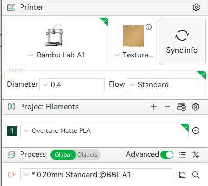
Printer, nozzle, filament, and process, with the Advanced settings toggle switched on.
I printed all of the parts on one plate: the base, two legs, the wheel, the vertical link, two wing links, and two spacers. The slicer arranged them automatically, and I left that layout.
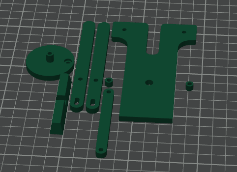
Every part lies flat on the plate, so the bolt holes point straight up and print as round as possible.
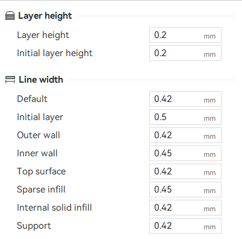
Layer height and line width: layer height and initial layer height are both 0.2 mm. Line widths are 0.42 mm for the default, outer wall, top surface, internal solid infill, and support, 0.45 mm for the inner wall and sparse infill, and 0.5 mm for the initial layer.
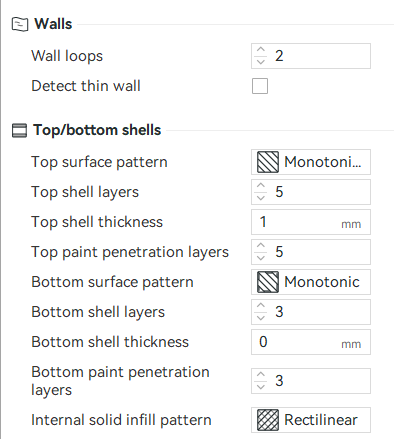
Walls and shells: 2 wall loops, 5 top shell layers (1 mm), and 3 bottom shell layers.
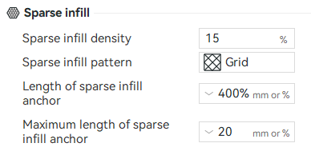
Infill: 15 percent, grid pattern.
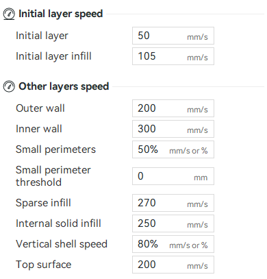
Speed: initial layer 50 mm/s and initial layer infill 105 mm/s. Outer wall 200 mm/s, inner wall 300 mm/s, sparse infill 270 mm/s, internal solid infill 250 mm/s, and top surface 200 mm/s.
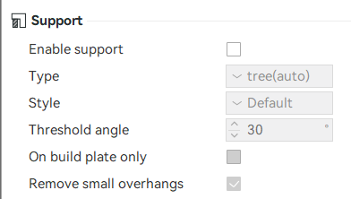
Supports: turned off. All of the parts lie flat, so I did not need supports.
Elephant foot is one slicer default that often ruins printed joints: the first layer is pressed into the bed and spreads out wider than the model. That makes holes near the bed come out undersized and makes pins flare at the base, which is a problem for bolts turning in holes. In Bambu Studio the setting is under Process, Quality, Precision [6].
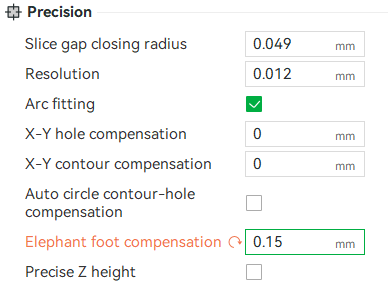
Precision settings: I used elephant foot compensation at 0.15 mm, changed from the A1 profile default of 0.075 mm [8], which is highlighted as changed in the screenshot. I left X-Y hole compensation and X-Y contour compensation at 0 [7], and auto circle contour-hole compensation turned off.
Every perimeter starts and ends at a seam, which leaves a small bump or line. A seam on a bolt hole or on the hub where parts touch can make the joint bind in one spot every time it turns. In Bambu Studio the setting is under Process, Quality, Seam [9]. I changed the seam position from the default, Aligned, to Random. Aligned puts every layer's seam in the same spot, which would leave a ridge running up the inside of the bolt holes and along the hub, and that ridge could catch once every turn. Random spreads the bumps around the circle, so there is no single ridge where parts touch. The trade-off is a rougher look on the outside surfaces.
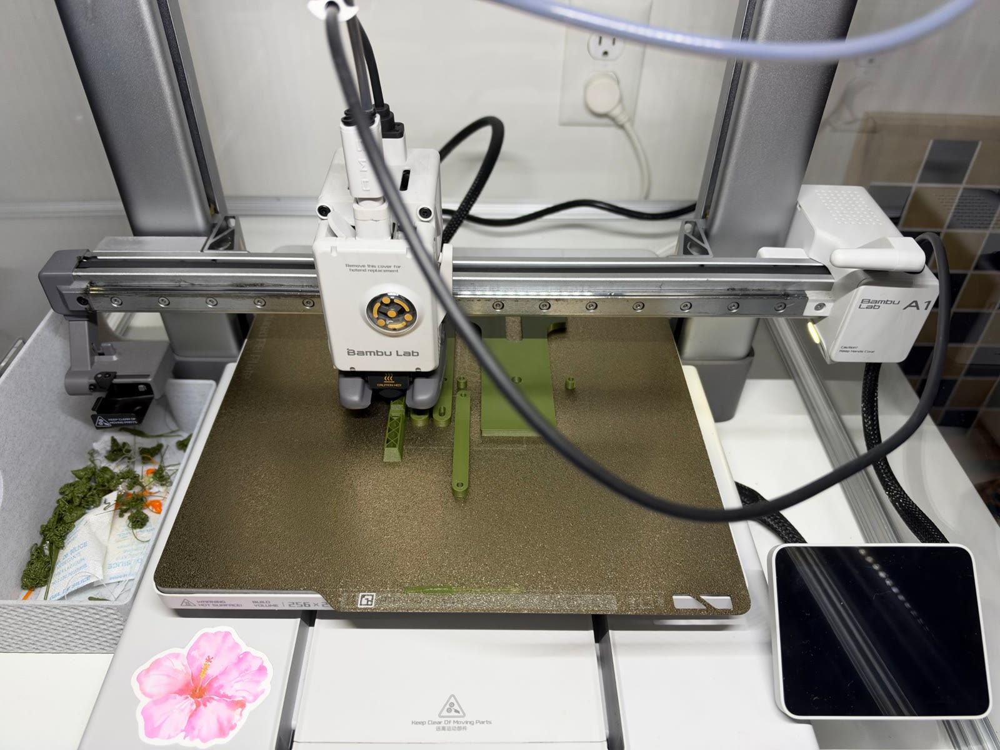
The Bambu Lab A1 printing the parts in green Overture Matte PLA.
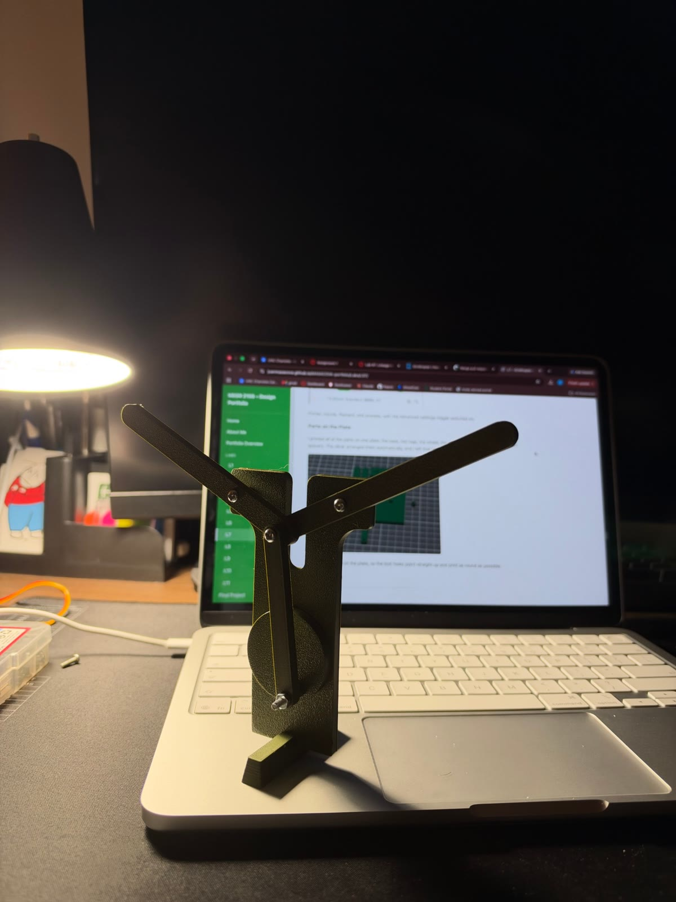
The finished ornithopter, assembled with M3 bolts, nuts, and washers. The wing links are shown spread in a V.
Time: I expected this project to take five to six hours at most, but it took more than that. Research took about 2 hours and writing the Research section took another 1.5 hours. Prototyping and choosing the mechanism took about 4 hours, CAD took about 1.5 hours, slicing took about 15 minutes, printing took 1 hour 5 minutes, post-processing took 15 minutes, assembly took another 15 minutes, and building this portfolio page took about 2 hours. The total is about 12.8 hours, roughly twice what I expected, and the biggest blocks were prototyping and choosing the mechanism and the research.
Biggest mistake: my biggest mistake was not understanding the scope of my initial idea. I wanted to build a mechatronic sculpture of a bird with motors moving the mechanism, and about two hours in I realized that was too big for the time I had and for what the assignment asked. The root cause was that I started designing the finished sculpture before checking it against the assignment and the time available. I fixed it by cutting the project down to a hand-cranked linkage and putting my effort into getting the linkage mechanism right, with the rest left for any extra time.
Tolerances: my first-print clearances worked. The screw holes are 3.4 mm for M3 bolts, which is 0.2 mm per side, and the hub is 6.0 mm in a 6.2 mm hole, which is 0.1 mm per side. The hub is the joint where friction affects performance the most, so I tested it, and it turns freely. I would not change any of the clearances, so the change is 0 mm.
SolidWorks files for every part and the full assembly. If you open the assembly, put all of the files in the same folder first, so SolidWorks can find the parts.
AI was used to help find sources 1 to 9, but I handpicked the mechanisms.
Tools: Bambu Lab A1 3D printer, Bambu Studio slicer, SolidWorks, Overture Matte PLA, and M3 bolts, nuts, and washers.